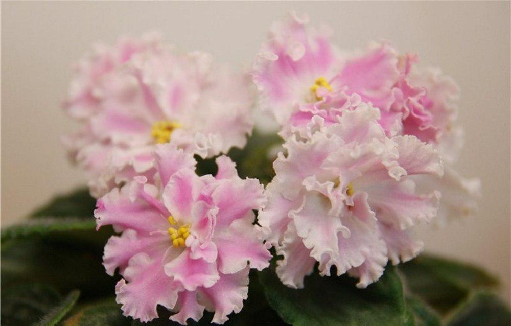

 Фиалка Зефир выведена селекционером Моревым К.Л. Описание и фото говорит о
том, что она обладает простыми или полумахровыми, крупными чашевидными цветами звездчатой
формы и диаметром около 4 сантиметров. Они имеют бахромчатые лепестки белой окраски
, которые украшены размытыми мазками нежного розового цвета. В процессе роста бахрома
начинает сильнее кудрявиться, а розовые пятна становятся ярче.
Данный сорт характеризуется довольно обильным и длительным цветением.
Растения обладают очень крепкими цветоносами, на которых может образовываться
по несколько бутонов одновременно. В результате этого цветущая фиалка Зефир становится
похожей на очень изящный миниатюрный букет.